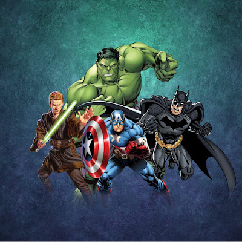

Die Wurzel, aus der alles kommt. MittelKap7 hatte die Idee, Marvel-Creator zusammenzubringen, und hat sie so lange weitergetragen, bis daraus MVD wurde. Er sucht die Leute, die als Nächstes dazugehören.
Der Baum
Drei Wurzeln, aus denen dieser Anfang gewachsen ist. Scrolle weiter, um von Wurzel zu Wurzel zu wandern.


Die Wurzel, die trägt. Basti baut und pflegt alles Technische – Websites, Discord-Bots, Struktur – und ist bei jeder Entscheidung dabei. Am 9. August 2026 sagte er zu, und damit stand MVD.



Die Wurzel, an der der Gedanke entstand. In Montrigors Marvel-Community war MittelKap7 jahrelang zu Hause, und dort kam ihm zum ersten Mal die Idee, dass Creator gemeinsam mehr erreichen. Montrigor gehört nicht zu MVD – aber ohne seine Community gäbe es MVD nicht.